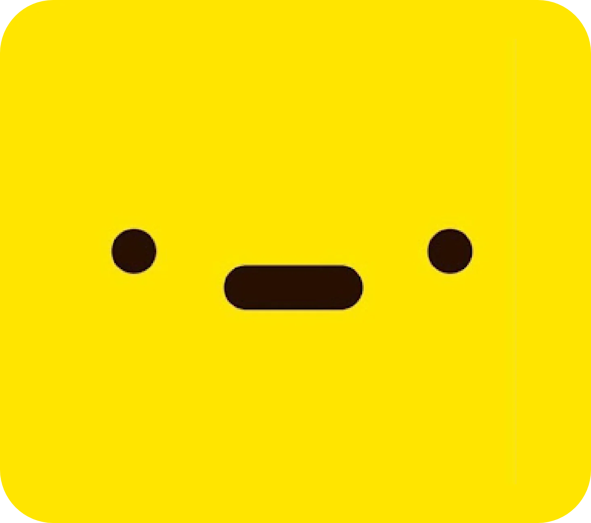

Videos para YouTube
Edición de contenido largo, cortes, ritmo, audio y recursos visuales que acompañan lo que se cuenta.
Soy PixelCraftFX. Edito contenido para YouTube, gaming y redes sociales. Cuido los cortes, el audio y los detalles visuales para que cada video mantenga su estilo, sin llenarlo de efectos innecesarios.

Una selección de proyectos y estilos de edición. Entra para explorar los videos.

Una página dedicada a mis ediciones, ejemplos de trabajo y proyectos de video.
Ver proyectosDistintos formatos, con una misma prioridad: que el video funcione.
Edición de contenido largo, cortes, ritmo, audio y recursos visuales que acompañan lo que se cuenta.
Momentos destacados, partidas, historias y videos con una edición adaptada al estilo del creador.
Edición vertical de formato corto, subtítulos y un montaje pensado para comunicar rápido y bien.
Empecé editando mis propios proyectos y, con el tiempo, fui desarrollando mi estilo trabajando con contenido para creadores. Me gusta encontrar el punto justo entre una edición dinámica y una que deje respirar cada momento.
Trabajo principalmente con Adobe Premiere Pro y también utilizo CapCut cuando el proyecto lo requiere.
Conoce mi trabajoCuéntame qué estás preparando y vemos cómo darle forma.